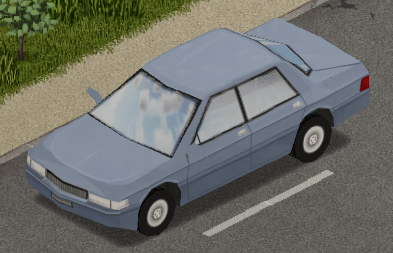
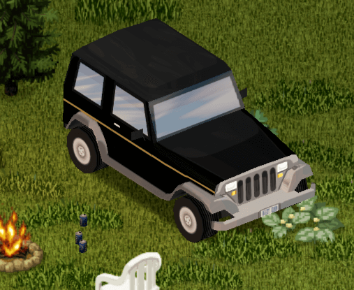

Sport
The Chevalier Cossette is a 2-door, 2-seat sports coupe found rarely throughout Knox Country.
The Cossette boasts the best power-to-weight ratio and top speed of any vehicle in the game; however, its high mobility is balanced by the lowest trunk and total cargo capacity in the game, and a complete inability to tow other vehicles
The Chevalier Primani is a 4-door, 4-seat, midsize sedan, uncommonly found throughout Knox Country.
The Chevalier Primani appears to be based off of the seventh-generation Chevrolet Impala SS, Subaru Loyale, or Toyota Corolla. Albeit with boxier styling in order to match the game's time period.

The Dash Elite is a 4-door, 4-seat, midsize sedan, uncommonly found throughout Knox Country.
The Dash Elite appears to be based off of the Dodge Spirit.
The Mercia Lang 4000 is a 2-door, 2-seat sport coupe uncommonly found throughout Knox Country.
The Mercia Lang 4000 appears to be based off of the Mercedes-Benz R129 SL series of sport coupes and roadsters.
Standard
The Chevalier Cerise Wagon is a full-size station wagon found throughout Knox Country. It is the station wagon version of the Chevalier Nyala.
The Chevalier Cerise Wagon appears to be based off of the third-generation Chevrolet Caprice Estate, and eighth-generation Ford Country Squire.
The Chevalier Dart is a 2-door, 4-seat hatchback found throughout Knox Country.
The Chevalier Dart appears to be based off of the Chevrolet Sprint, a captive import of the Suzuki Cultus.
The Chevalier Nyala is a full-size sedan found throughout Knox Country. The Chevalier Cerise Wagon is a station wagon version of this car.
The Chevalier Nyala appears to be based off of the sixth-generation Chevrolet Impala.

The Dash Rancher is a 2-door, 2-seat SUV found throughout Knox Country.
The Dash Rancher appears to be based off of the Jeep Wrangler YJ.
The Masterson Horizon is a small, 2-door, 4-seat sedan found throughout Knox Country.
The Masterson Horizon appears to be based off of the E80 Toyota Corolla, specifically the AE86 Corolla Levin; and the Ford Festiva WA.
The Trailer is an un-powered utility vehicle found throughout Knox Country. Their usefulness can become immediately apparent, as repairing and hooking one up to a player's existing vehicle adds an additional 100 storage to their effective total vehicle storage.
While there doesn't seem to be a specific model the trailer is based off of, its design is that of a two-wheeled utility wagon. It is the only other utility vehicle that must be towed by a working vehicle other than the Advert Trailer.
The Advert Trailer is an un-powered vehicle found throughout Knox County. Their use consists of displaying commercial advertisements for various pre-infection businesses scattered across the map.
Currently, their implementation remains purely cosmetic, and as such towing one would provide the player no discernible benefit other than wielding a powerful fashion statement.
Heavy Duty
The Chevalier D6 is a pickup truck found throughout Knox Country. It is a Heavy-Duty vehicle with relatively soft suspension. This makes it a decent off road vehicle once you replace the tires, although the mediocre engine power is something to keep in mind. It features a large trunk able to fit approximately 110 units of weight.
The Chevalier Step Van is a step van found throughout Knox Country. It boasts an extremely large trunk capacity, making it an ideal vehicle for hauling large amounts of goods between safehouses, or as a mobile base.
The Dash Bulldriver is an SUV found throughout Knox Country. Similar to its pickup truck cousin, the Chevalier D6, the Bulldriver offers impressive trunk space at the cost of seating capacity. Similarly, several variants come adorned with sirens. Additionally, the civilian version will have a regular radio installed, while special versions like the police or firefighter version of the Bulldriver will have a two-way radio installed.
The Franklin All-Terrain is a 4-door, 4-seat SUV found throughout Knox Country.
The Franklin All-Terrain appears to be based off of the first-generation Ford Explorer.
The Franklin Valuline is a van found throughout Knox Country. This heavy-duty vehicle comes in a wide range of variants, with some holding superior over others in engine horsepower, weight, or special features like sirens.